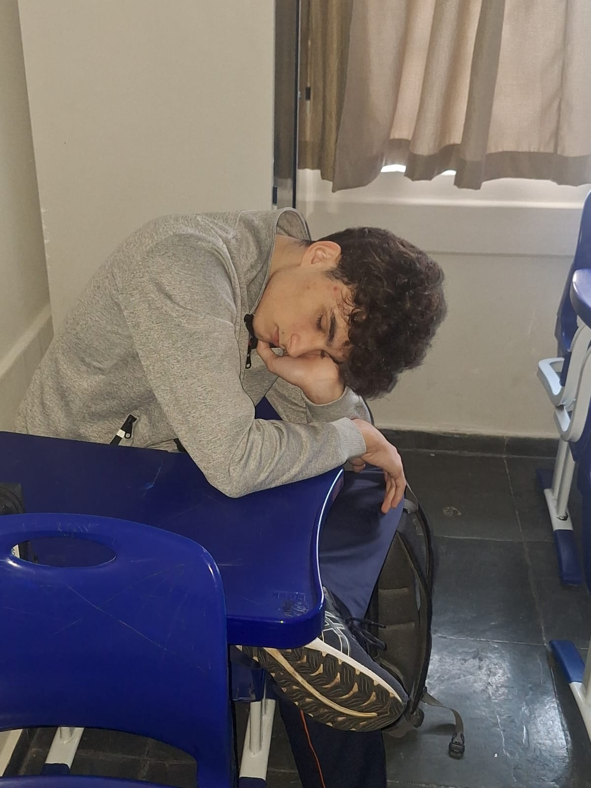

Participe ativamente
Inscreva-se para ser voluntário do Caminho Solidário e fazer parte da transformação.
Complete o formulário abaixo e ajude a Escola Paulo de Tarso a oferecer suporte de qualidade para estudantes do Fundamental I.
Horas de impacto
Encontros semanais projetados para gerar aprendizado e acolhimento.
Comunidade engajada
Professores, alunos e famílias unidos por uma causa social.
Status da inscrição
Os dados do voluntário são salvos no armazenamento local do navegador para confirmar participação e manter a contagem de inscritos.
Aguardando inscrição...
Total de voluntários inscritos: 0
A última visita aparecerá aqui.
Localização no mapa
Veja onde o Colégio Paulo de Tarso está localizado e como chegar para participar do voluntariado.
Desenvolvedor do site
Equipe
Nome: Gabriel Zardetto
Turma: 2 EM TEC
Tecnologias: HTML, CSS e JavaScript puro
GitHub: github.com/Gabriel0-cmd
Desenvolvido por Gabriel Zardetto com foco em usabilidade e apoio à comunidade escolar: o formulário salva localmente os dados para facilitar o acompanhamento dos inscritos e gerar impacto real nas atividades.
Contato e informações do colégio
Matricule-se ou saiba maisEndereço
Rua Mazzini, 61 - Cambuci, São Paulo - SP
Telefone
(11) 3729-7060
História
O Colégio Paulo de Tarso foi fundado em 1982 e iniciou oficialmente suas atividades de registro em 15 de março de 1982.